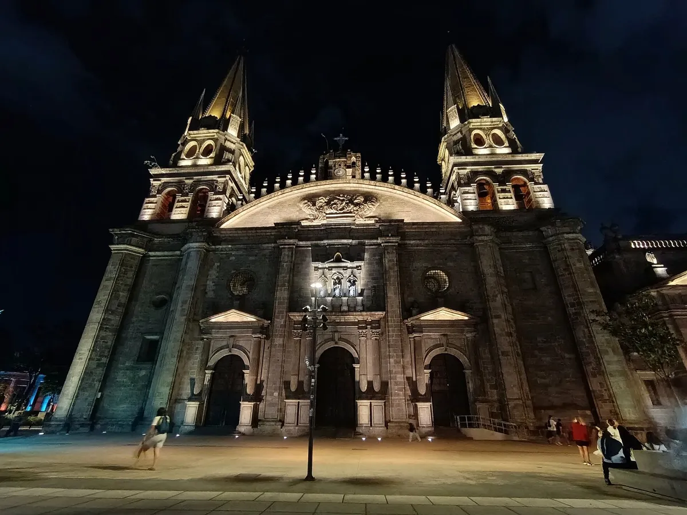

El caso Posadas Ocampo: fuego cruzado o crimen premeditado

El 24 de mayo de 1993, el cardenal Juan Jesús Posadas Ocampo fue acribillado junto a seis personas en el Aeropuerto Internacional de Guadalajara. Durante décadas, el caso ha estado dividido entre dos posturas antagónicas: la versión de la Procuraduría General de la República, que sostuvo que se trat
Compartir por WhatsApp▶ Ver este video en YouTube y suscríbete
El tiroteo en el aeropuerto de Guadalajara
El 24 de mayo de 1993, a las 3:45 de la tarde, el estacionamiento del Aeropuerto Internacional Miguel Hidalgo de Guadalajara se convirtió en escenario de un tiroteo masivo. En el lugar fueron acribillados el cardenal Juan Jesús Posadas Ocampo, su chofer Pedro Pérez Hernández y cinco personas más.
El suceso conmocionó a la sociedad civil y a la jerarquía católica mexicana en una de las terminales aéreas más concurridas del país. El vehículo en el que viajaba el prelado, un Grand Marquis blanco, recibió múltiples impactos de armas automáticas.
✉️ Recibe lo importante del día en tu correo. Suscríbete gratis →El médico forense Mario Rivas Souza certificó en los dictámenes periciales que el cuerpo del cardenal presentaba 14 impactos de bala disparados a muy corta distancia. El peritaje forense identificó además una huella de pólvora en el mentón de la víctima, un hallazgo que abrió de inmediato el debate sobre la mecánica real de los hechos.
Junto al cardenal y su chofer perecieron Martín Aceves y otras cuatro personas civiles que se encontraban en el área del estacionamiento. En el lugar se abandonaron armas de grueso calibre y casquillos percutidos pertenecientes a fusiles de asalto.
La magnitud de la balacera obligó a las autoridades locales y federales a desplegar un operativo pericial inmediato en medio de la confusión de viajeros y empleados.
El contexto político y el choque de carteles
El crimen ocurrió durante el sexenio del presidente Carlos Salinas de Gortari, apenas meses después de que México restableciera formalmente las relaciones diplomáticas entre el Estado mexicano y la Santa Sede. El país se preparaba para la entrada en vigor del Tratado de Libre Comercio de América del Norte y el gobierno federal buscaba proyectar una imagen de estabilidad institucional frente a la comunidad internacional.
Paralelamente, el territorio de Jalisco y los estados vecinos atravesaban una pugna armada entre grupos de la delincuencia organizada. La rivalidad entre la facción encabezada por Joaquín 'El Chapo' Guzmán Loera y la organización de los hermanos Arellano Félix había desatado tiroteos previos en lugares públicos.
Esta confrontación clandestina entre bandas rivales se convirtió en el trasfondo inmediato sobre el cual la autoridad ministerial construyó sus primeras diligencias. Para la Iglesia católica, la muerte de Posadas Ocampo representó el atentado de mayor impacto contra un miembro de su jerarquía en la historia moderna del país.
Las autoridades religiosas y las familias de las víctimas exigieron una investigación expedita y transparente. Sin embargo, desde las primeras horas, el flujo informativo estuvo marcado por versiones preliminares encontradas respecto a si se trató de una agresión premeditada o un choque incidental.
La versión oficial: fuego cruzado y confusión
En julio de 1993, el procurador general de la República, Jorge Carpizo MacGregor, presentó ante la opinión pública las conclusiones formales del informe federal. La Procuraduría General de la República sostuvo que la muerte de Posadas Ocampo y su chofer ocurrió al quedar atrapados en un fuego cruzado entre pistoleros al servicio de los hermanos Arellano Félix y gatilleros de Joaquín 'El Chapo' Guzmán.
Esta postura oficial descartó motivaciones de índole política o ideológica. El informe ministerial de la PGR precisó que el cardenal y el señor Martín Aceves fueron confundidos con 'El Chapo' Guzmán y sus escoltas.
La fiscalía argumentó que la coincidencia de vehículos de lujo, la llegada simultánea a la terminal y la tensión del enfrentamiento provocaron que los gatilleros de Tijuana abrieran fuego indiscriminadamente contra el automóvil de la Iglesia.
Para ilustrar esta postura, el gobierno federal utilizó reconstrucciones animadas y mapas periciales en cadena nacional. Con base en esta línea de investigación, el Ministerio Público Federal consignó a decenas de personas y libró órdenes de captura contra los líderes de ambas agrupaciones criminales.
En las semanas posteriores se logró la detención en Guatemala de Joaquín Guzmán Loera, quien fue recluido en el penal de Almoloya de Juárez. Para la procuraduría federal, el móvil delictivo residía exclusivamente en la reyerta del narcotráfico.
Las inconsistencias periciales y testimoniales
Frente a la conclusión ministerial, surgieron de inmediato inconsistencias documentadas por los peritos del fuero común de Jalisco. El médico forense Mario Rivas Souza ratificó públicamente que los disparos no correspondían a una ráfaga perdida de fuego cruzado, sino a una agresión a quemarropa.
La presencia de pólvora en la barbilla del cardenal implicaba una distancia de tiro inferior a un metro, lo que ponía en duda que los tiradores no hubieran identificado los ornamentos clericales de la víctima.
Testigos presenciales en el aeropuerto declararon haber escuchado órdenes verbales directas dirigidas a rodear el vehículo del cardenal antes de detonar las armas. Asimismo, familiares de las víctimas civiles cuestionaron cómo pudieron escapar los tiradores en vuelos comerciales regulares de Aeroméxico que demoraron su salida varios minutos.
Estas anomalías operativas despertaron sospechas de encubrimiento y complicidad de mandos policiales asignados a la vigilancia de la terminal aérea. Años después, la investigación federal enfrentó crisis adicionales por fallas procesales en la cadena de custodia del expediente original.
El 12 de junio de 2001, la PGR admitió la pérdida de constancias ministeriales, incluida la declaración rendida por el entonces nuncio apostólico Girolamo Prigione. Además, se detectó la depuración no autorizada de 954 fojas útiles del expediente, lo que obligó a ejercer acción penal contra cuatro servidores públicos por ejercicio indebido del servicio público.
La hipótesis del complot y el Grupo Interinstitucional
El 9 de julio de 1998, bajo la gestión del procurador general Jorge Madrazo Cuéllar, se formalizó la creación de un Grupo Interinstitucional para revisar a fondo el caso. La comisión estuvo integrada por agentes del Ministerio Público Federal de la PGR,
representantes jurídicos del Gobierno de Jalisco y dos obispos juristas de la Conferencia del Episcopado Mexicano, junto con el cardenal sucesor Juan Sandoval Íñiguez. El propósito era contrastar las pruebas acumuladas y valorar nuevas evidencias.
El cardenal Juan Sandoval Íñiguez y los abogados del gobierno estatal de Jalisco defendieron la hipótesis de un crimen de Estado premeditado. Según esta postura, el arzobispo Posadas Ocampo poseía información sensible sobre supuestos nexos entre funcionarios de alto nivel y el crimen organizado, lo que habría motivado su eliminación deliberada.
Para respaldar este planteamiento, citaron los peritajes de balística de corta distancia y testimonios que apuntaban a la supuesta presencia del director de la Policía Judicial Federal en el aeropuerto. Por su parte,
los fiscales de la PGR y juristas de la Conferencia del Episcopado Mexicano insistieron en que los elementos científicos confirmaban la hipótesis de la confusión en medio del enfrentamiento armado. La fiscalía federal argumentó que las declaraciones sobre conspiraciones políticas carecían de pruebas materiales directas o registros documentales verificables.
Para los fiscales federales, desviar el caso hacia un complot político desestimaba los señalamientos contra los sicarios confesos pertenecientes al cártel de Tijuana. Tras dos años de labores, 23 reuniones plenarias,
139 declaraciones ministeriales adicionales y 15 pruebas de polígrafo que ampliaron el expediente de 47 a 57 tomos, el Grupo Interinstitucional concluyó sus sesiones el 27 de julio de 2000 sin alcanzar un consenso.
En una sesión final de casi cinco horas, ambas posturas quedaron formalmente registradas como irreconciliables, por lo que el caso se declaró concluido sin acuerdo definitivo de indagación.
Resoluciones judiciales y condenas de 40 años
El 15 de noviembre de 2000, la PGR determinó enviar el expediente a reserva provisional al ratificar técnicamente la hipótesis de la confusión. Sin embargo, en 2001 la fiscalía reabrió las indagatorias bajo los expedientes AP SE/001/95 y AP 1132/93 para dar seguimiento a ocho líneas de investigación específicas.
Para el 23 de mayo de 2003, la PGR admitió que aún se exploraban aspectos como la posible operación de un avión militar que habría escoltado a Guzmán Loera tras la balacera. En el terreno judicial penal, el Juzgado Cuarto de lo Criminal en el estado de Jalisco emitió una sentencia histórica el 7 de mayo de 2004.
El juez penal impuso la pena máxima de 40 años de prisión a ocho personas señaladas como autores materiales del homicidio calificado de Juan Jesús Posadas Ocampo y de las otras seis víctimas en el aeropuerto. Por delitos conexos, como homicidio en grado de tentativa y acopio de armas, varios procesados recibieron condenas acumuladas de entre 61 y 283 años.
Entre los sentenciados destacaron Ulises Murillo Mariscal, quien acumuló 283 años de cárcel; Rodrigo Villegas Bon, sentenciado a 273 años y medio; Juan Enrique Vascones Hernández, con 233 años; y José Antonio Malcom Fararoni, condenado a 215 años.
En contraparte, los procesados José Guadalupe Armenta Valdez y Juan Carlos Mendoza Castillo obtuvieron sentencia absolutoria por falta de elementos convictivos para acreditar su responsabilidad material en los hechos. A nivel integral, el Poder Judicial contabilizó tres sentencias en el fuero común y dos en el fuero federal, además de dictarse tres acuerdos de no ejercicio de la acción penal.
El 9 de abril de 2007, el juez Jesús Salvador Rivera dio por cerrado formalmente el expediente judicial principal. Posteriormente, en octubre de 2013, el Instituto Federal de Acceso a la Información Pública ordenó a la PGR transparentar las sentencias emitidas, al resolver que las resoluciones judiciales firmes deben ser públicas.
El expediente abierto en la memoria colectiva
A más de tres décadas de la balacera en el aeropuerto tapatío, el caso de Juan Jesús Posadas Ocampo permanece como uno de los expedientes judiciales más debatidos en la historia del país.
Pese a la existencia de sentencias condenatorias firmes contra pistoleros de los carteles de la época, las discrepancias entre peritajes federales y locales nunca fueron solventadas en un informe unánime. El expediente penal cerró en los juzgados, pero la controversia social se mantiene intacta.
Para la fiscalía federal, el caso quedó probado científicamente como un error táctico de grupos armados que disputaban el control del trasiego en Jalisco. Para sectores eclesiásticos y autoridades ministeriales locales de Jalisco, subsiste la sospecha de que los 14 tiros a corta distancia representaron una ejecución selectiva con presuntas implicaciones de funcionarios de seguridad.
Sin consensos concluyentes entre las partes, el expediente deja planteadas interrogantes sobre la actuación institucional que la opinión pública continúa analizando.
Sigue viendo
Con información de
El Universal · La Jornada · Proceso